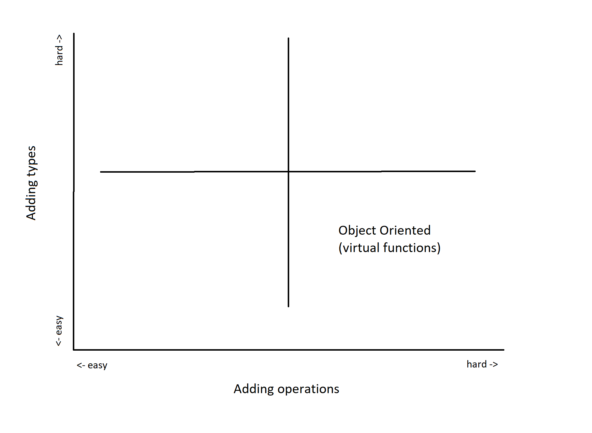

## A story about overloads #### (can we implement the Expression Problem #### and multimethods in C++, trivially?) ** ACCU Oxford - 22 October 2019 Note: Title page notes...
<table> <tr> <td style="vertical-align: middle"> <img src="images/wheel1.jpg" style="width: 100%; background:none; border:none; box-shadow:none;" /> </td> <td> </td> </tr> <tr> <td style="vertical-align: middle"> Start with something simple? </td> <td> </td> </tr> </table> Note: * Story about Archemides...trained as Naval Architect * simple and elegant * story about Lego * apologies, not finished yet... * because aspirations have changed * no longer 'can we make this work...now 'can we make this work fast'...
### ACCU Conference 2009 #### "Cranking Policies Up" - Andrei Alexandrescu <table> <tr> <td style="vertical-align: middle"> </td> </tr> </table><small> [https://accu.org/content/conf2009/AndreiAlexandrescu_cranking-policies-up.pdf]() </small> Note: * story about function overloads * started here with red-green code (based on work by Scott Meyers) * "wait - what?" why does Andrei do this? * spent next 20 mins trying to work out what the consequences were.
### 2009-2012 <table> <tr> <td style="vertical-align: middle"> </td> </tr> </table> Note: * I wrote some code to try it out... * got the red-green code from Scott Meyer's talk * discovered it crashed the compiler (2010/2012)
### 2009-2012 <table> <tr> <td style="vertical-align: middle"> </td> </tr> </table> Note: * tried to re-write with multiple arguments * re-wrote some to use integral constants/bitfields instead of types. * worked much better * no use-case, so went no further * life intervenes...time passes...
### 2012-2015 <table> <tr> <td style="vertical-align: middle"> <img src="images/double-dispatch.png" style="width: 100%; background:none; border:none; box-shadow:none;" /> </td> </tr> </table> Note: * wrote some code for dd * calls overloaded function with 2 arguments as alternative to dd * code works but...a bit rough! * life intervenes...time passes...
### 2016 - Expression parser for Calculator ```c++ struct Expr { virtual ~Expr() = default; virtual double eval() const = 0; }; ``` ```c++ struct Constant : public Expr { double eval() const { return value; } double value = 0.0; }; ``` Note: * asked to write some code for new contract * didnt know anything about that - seach engine of choice... * canonical OO example uses Expr object and derived types * worked well until it broke...
### 2016 - Expression parser for Calculator ```c++ struct Expr { virtual ~Expr() = default; virtual double eval() const = 0; virtual void print(std::ostream& os) const = 0; }; ``` ```c++ struct Constant : public Expr { ... void print(std::ostream& os) const { os << value; } double value = 0.0; }; struct Plus : public Expr { ... void print(std::ostream& os) const { lhs->print(os); os << "+"; rhs->print(os); } }; ``` Note: * worked well until it broke... * decided that I needed to debug it so added 'print' operation... * adding types id easy but adding operations is hard! * re-discovered Wadler's expression problem...
### "Wadler's Expression Problem" <pre> From: Philip Wadler <wadler@research.bell-labs.com> The Expression Problem Philip Wadler, 12 November 1998 The Expression Problem is a new name for an old problem. The goal is to define a datatype by cases, where one can add new cases to the datatype and new functions over the datatype, without recompiling existing code, and while retaining static type safety (e.g., no casts)... </pre> <small> [http://homepages.inf.ed.ac.uk/wadler/papers/expression/expression.txt](http://homepages.inf.ed.ac.uk/wadler/papers/expression/expression.txt) </small> Note: * much more but fundamentally about changing as little as possible to add types/operations. * my interpretation: adding types means no direct change to code for other types or operations * adding operations means no direct change to code for other types or operations
<table> <tr> <td style="vertical-align: middle">  </td> </tr> </table> Note: * first serious talk... * so I need a quadrant diagram! * the canonical OO solution sits in the bottom right (easy to add types, hard to add operations)
### Common alternatives - Visitor pattern <table> <tr> <td style="vertical-align: middle"> </td> </tr> </table><small> _"...it seems that we've just turned the expression problem on its side: we're using an OOP language, but now it's hard to add types and easy to add ops, just like in the functional approach."_ [https://eli.thegreenplace.net/2016/the-expression-problem-and-its-solutions/](https://eli.thegreenplace.net/2016/the-expression-problem-and-its-solutions/) </small> Note: * after some searching with 'the search engine of my choice', found this... * other good srticles on that site about double dispatch. * in modern c++, we can use std::visit:
```c++ double eval(demov::Expr const& expr) { struct visitor { double operator()(demov::Constant const& expr) const { return expr.value; } double operator()(demov::Plus const& expr) const { return eval(*expr.lhs) + eval(*expr.rhs); } double operator()(demov::Minus const& expr) const { return eval(*expr.lhs) - eval(*expr.rhs); } }; return std::visit(visitor{}, std::decay_t<demov::Expr::variant>(expr)); } ``` ```c++ void print(std::ostream* os, demov::Expr const& expr) { struct visitor { void operator()(std::ostream* os, demov::Constant const& expr) const { (*os) << expr.value; } ... }; } ``` Note: * "We found visitors unsuitable to express our application logic directly, surprisingly hard to teach students" * http://www.stroustrup.com/OOPSLA-typeswitch-draft.pdf * summary: easy to add operations, hard to add types.
<table> <tr> <td style="vertical-align: middle"> </td> </tr> </table> Note: * now we can fill in the upper left quardant... * ...but what's in the 'hard/hard' box?
#### Double dispatch using vitual functions only? <small> Scott Meyers, "More Effective C++", item 31 </small> ```c++ class GameObject { public: virtual void collide(GameObject& otherObject) = 0; virtual void collide(SpaceShip& otherObject) = 0; virtual void collide(SpaceStation& otherObject) = 0; virtual void collide(Asteroid& otherobject) = 0; ... }; class SpaceShip: public GameObject { public: virtual void collide(GameObject& otherObject); virtual void collide(SpaceShip& otherObject); virtual void collide(SpaceStation& otherObject); virtual void collide(Asteroid& otherobject); ... }; ``` Note: * All object need to know about all other objects, *and* operations * note that we only have one operation here...
<table> <tr> <td style="vertical-align: middle"> </td> </tr> </table> Note: * ...so is there anything we can put in the 'easy/easy' box? * let's consider that by taking a small diversion...
#### Consider the ideal (hypothetical) example... ```c++ struct Constant { Constant(double v) : value(v) {} double value = 0.0; }; struct Plus { Plus(Constant const* l, Constant const* r) : lhs(l), rhs(r) {} Constant const* lhs = nullptr; Constant const* rhs = nullptr; }; struct Minus { Minus(Plus const* l, Constant const* r) : lhs(l), rhs(r) {} Plus const* lhs = nullptr; Constant const* rhs = nullptr; }; ``` Note: * Imagine we can use the static types and their public interface..
```c++ double eval(Constant const& expr) { return expr.value; } double eval(Plus const& expr) { return eval(*expr.lhs) + eval(*expr.rhs); } double eval(Minus const& expr) { return eval(*expr.lhs) - eval(*expr.rhs); } ``` Note: * Our eval operation is independent of the types...
```c++ void print(std::ostream& os, Constant const& expr) { os << expr.value; } void print(std::ostream& os, Plus const& expr) { print(os, *expr.lhs); os << "+"; print(os, *expr.rhs); } void print(std::ostream& os, Minus const& expr) { print(os, *expr.lhs); os << "-"; print(os, *expr.rhs); } ``` Note: * as is the print operation... * but of course in the real world, we don't have static types, so this doesn't work... * so I always imagined that 'easy/easy' was not possible... * life intervenes, time passes...
#### Then this happened...ACCU 2019, Bristol <small> <table> <tr> <td style="text-align:left"> "I'm throwing a type erased object" <p>...<p> "Throwing objects of dynamic types"<p> "...and catching using RTTI\" (22 mins) </td> <td> </td> </tr> </table> </small> <table> <tr> <td style="text-align:left"> <small> Pseudo code<p>(29 mins): </small> </td> <td style="text-align:left"> ``` //throw site: "throw MyException(value)" return (void*) new MyException(value); //... // PROPOGATE ... // catch site: "catch(EBase& e) {/*...*/} by reference" if( (auto e = special_dynamic_cast<EBase>(pvoid); e) { /*...*/} ``` </code> </td> </tr> </table> Note: * Herb was talking about static exceptions...but needed to explain how today's exceptions work... * I thought - "wait, what?" * ...then "I can use that!" * ...and missed the next 20 mins of that talk too...
<small> [https://i.cs.hku.hk/~bruno/papers/Modularity2016.pdf](https://i.cs.hku.hk/~bruno/papers/Modularity2016.pdf) <table> <tr> <td style="vertical-align: middle"> </td> </tr> </table> </small> Note: * Ths paper had been itching at my mind... * it describes a method of changing the return type of an interface function so that (dynamically) the caller can dispatch to the right function.
```java interface Expr { double eval(); } class Constant implements Expr { double value; Constant(double x) { this.value = x; } public double eval() { return value; } } abstract class Plus implements Expr { abstract Expr getE1(); //refinable return type! abstract Expr getE2(); //refinable return type! public double eval() { return getE1().eval() + getE2().eval(); } } ``` Note: * similar to what we defined before...
```java interface Print extends Expr { String print(); } class ConstantPrint extends Constant implements Print { ConstantPrint(double x) { super(x); } public String print() { return "" + x; } } abstract class PlusPrint extends Plus implements Print { abstract Print getE1(); //return type refined! abstract Print getE2(); //return type refined! public String print() { return "(" + getE1().print() + "+" + getE2().print() + ")"; } } ``` Note: * we also define a separate 'Print' with refined return types...
```java class PlusFinal extends Plus { Expr e1, e2; PlusFinal(Expr e1, Expr e2) { this.e1 = e1; this.e2 = e2; } Expr getE1() { return e1; } Expr getE2() { return e2; } } Expr exp = new PlusFinal(new Constant(3.0), new Constant(5.0)); System.out.println(exp.eval()); ``` Note: * Of course, we can't change the return type in C++ (other than co-variant return types which aren't much use outside cloning...) * ...but (as I demonstrated at the last ACCU Oxford lightning talks!), we can exit the function in other ways...
```c++ struct Constant : public Expr { Expr* invoke() const override { throw this; //return nullptr; } double value = 0.0; }; ``` ```c++ double exception_eval(excep::Expr const& expr) { double result = 0.0; try { expr.invoke(); } catch (excep::Constant const* p) { result = excep::eval(*p); } catch (excep::Plus const* p) { result = excep::eval(*p); } return result; } ``` Note: * We would never use this in production code, of course (the benchmarks I'll show later will demonstrate why!) * but it *does* give us some clues about what we might be able to do... * in particular, "the compiler knows the types when it throws and at the catch site"
```c++ struct Constant : public Expr { magic_type invoke() const override { return magic_type(this); } ... }; struct Plus : public Expr { magic_type invoke() const override { return magic_type(this); } ... }; ``` Note: * What if we could return some magic return type that type erases the given type... * ...how would we get the type back?
```c++ { ... [](void const* this_, magic_type const* invoke, operations& ops) -> void { invoke->call(static_cast<T const*>(this_), ops); } } struct magic_type { ... template <typename T> static void call(T const* obj, operations& ops); }; ``` Note: * We get the magic type to pass (via a type erased function) its type to a template function...
```c++ template <typename T> void invoke_eval::invoke(const T& expr) { result = eval(expr); } template <typename T> void magic_type::call(T const* obj, operations& ops) { T const* callable_t = static_cast<T const*>(obj); ... ops.invoke(*callable_t); ... } ``` Note: * ...then in the template function, call the overload... * Clearly I've skirted around some details, so let's look at a demo... * DEMO TIME!
<table> <tr> <td> </td> </tr> </table> Note: * Is this the 'easy/easy' option?
<table> <tr> <td style="vertical-align: middle"> </td> </tr> </table> Note: * let's look at some benchmarks...
<table> <tr> <td style="vertical-align: middle"> <small> #### Plus * Simple in principle! * No changes to code for types * No changes to code for operations * Only uses public interface of type </small> </td> <td> <small> #### Minus * Invasive (types need a function that returns a magic type) * Need to be careful how code is arranged to make types/operations visible * Slightly slower than hand crafted code * Requires complete public interface to be useful * Need a list of variant types for operations </small> </td> </tr> </table> Note:
#### 2 arguments... ```c++ struct Expr { virtual magic_type invoke() const = 0; }; struct magic_type { void call(operations& ops) { vptr->op(ptr, this, ops); } ... template <typename T> static void call(T const* lhs, magic_type& rhs) { // we have the type of the lhs, but how to get the rhs? } }; ``` Note: * 2 arguments - sadly this doesn't work... * we have fixed types in Expr and fixed types in magic_type * we end up in a spiral of only being able to get one type...
#### Thought experiment... ```c++ struct Expr { virtual typeid invoke() const = 0; }; void eval(Plus const& lhs, Constant const& rhs) {...} void f(Expr const& lhs, Expr const& rhs) { auto idlhs = lhs.invoke(); using LhsType = decltype_from_typeid(idlhs); auto idrhs = rhs.invoke(); using RhsType = decltype_from_typeid(idrhs); eval(static_cast<LhsType>(lhs), static_cast<RhsType>(rhs)); } ``` Note: * what if we had some 'decltype' like method to get the type? * consider though...if the virtual method could throw any type, we'd have to be able to catch any type * do we really want the compiler to implement a lookup table for all the types in our progam? * couldn't we just dispatch the types to the overload? * consider the exception case...
```c++ double exception_eval(excep::Expr const& expr) { double result = 0.0; try { expr.invoke(); } catch (excep::Constant const* p) { result = excep::eval(*p); } catch (excep::Plus const* p) { result = excep::eval(*p); } return result; } ``` Note: * Note that this *doesn't* catch anything...it explicitly catches a list of types... * Also, talk by Yuriy Solodkyy at CppCon2014 ["Polymorphic exceptions"] (6 mins) * to make this work (the clue is in the name!) we need a typelist...
```c++ struct Expr { virtual ~Expr() = default; virtual magic_type type_id() const noexcept = 0; }; struct Constant; struct Plus; struct Minus; using Types = tuple<Constant, Plus, Minus>; ``` Note: * In this case, the typelist can be a tuple or whatever...so long as it's a list
```c++ struct Constant : public Expr { magic_type type_id() const noexcept override { return magic_type::make_magic_type<Types>(this); } double value = 0.0; }; ``` Note: * types return a type-erased object as before...
#### One argument dispatching ```c++ template <size_t ID> struct dispatch_impl<1, ID> { template <typename List, typename ReturnType, typename Exec, typename VirtualArgs> static ReturnType eval(Exec exec, const VirtualArgs& vargs) { size_t id0 = index(varg[0]); if (id0 == ID - 1) { const auto& lhs = extract_type<ID - 1>(varg0); return exec(lhs); } return dispatch_impl<1, ID - 1>::template eval<List, ReturnType>(exec, vargs); } }; double demo_eval(Expr const& expr) { return dispatch<Types>([](auto local_expr) { return eval(local_expr); }, std::array{ expr.type_id() }); } ``` Note: * first, we'll consider the (simplified) case of 1 argument... * foreach element in the type list, we test to see if it has the same id * if it is, we're done, so we dispatch to the function * note that we need a compile time constant to extract the type, so we need ID from the template * if not, loop with a different id... * could also be implemented with a integer_sequence and fold expressions (C++ 17) * but left like this to test some possible optimisations...
#### Two arguments dispatching ```c++ template <size_t ID> struct dispatch_impl<2, ID> { template <typename List, typename ReturnType, typename Exec, typename VirtualArgs> static ReturnType eval(Exec exec, const VirtualArgs& vargs) { if (id0 == id1) { if (id0 == ID - 1) { //... extract types... return exec(lhs, rhs); } return dispatch_impl<2, ID - 1, ArgIndex>::template eval<List, ReturnType>(exec, vargs); } else if (id0 == ID - 1) { //... extract lhs... constexpr size_t OtherID = (ID == 2 ? 1 : 2); return dispatch_impl<2, OtherID, ArgIndex - 1>::template eval_lhs<List, ReturnType>(exec, id1, lhs, varg1); } else if (id1 == ID - 1) { //... extract rhs... constexpr size_t OtherID = (ID == 2 ? 1 : 2); return dispatch_impl<2, OtherID, ArgIndex - 1>::template eval_rhs<List, ReturnType>(exec, id0, varg0, rhs); } return dispatch_impl<2, ID - 1, ArgIndex>::template eval<List, ReturnType>(exec, vargs); } ... }; ``` Note: * next, 2 arguments... * as before, loop over the elements of the type list * this time, we have some complications... * the the ids is the same, we're done, so dispatch * otherwise, consider both the lhs and the rhs and recurse to another id using that type * needs an overload for both the lhs and the rhs...
```c++ double demo_eval(Expr const& lhs, Expr const& rhs) { return dispatch<Types>([](auto local_lhs, auto local_rhs) { return eval(local_lhs, local_rhs); }, std::array{ lhs.type_id(), rhs.type_id() }); } ``` Note: * unknown types passed as a std::array...
```c++ template <size_t ID> struct dispatch_impl<2, ID> { ... template <typename List, typename ReturnType, typename Exec, typename LHS, typename VArg> static ReturnType eval_lhs(Exec exec, size_t id, const LHS& lhs, const VArg& varg) { if (id == ID - 1) { //... extract rhs... const auto& rhs = virtual_arg_traits<List>::extract_type<ID - 1>(varg); return exec(lhs, rhs); } return dispatch_impl<2, ID - 1, ArgIndex>::template eval_lhs<List, ReturnType>(exec, id, lhs, varg); } template <typename List, typename ReturnType, typename Exec, typename VArg, typename RHS> static ReturnType eval_rhs(Exec exec, size_t id, const VArg& varg, const RHS& rhs) { if (id == ID - 1) { //... extract lhs... return exec(lhs, rhs); } return dispatch_impl<2, ID - 1, ArgIndex>::template eval_rhs<List, ReturnType>(exec, id, varg, rhs); } }; ``` Note: * we only have 2 arguments, so we can loop in these overloads until we find the matching id (or we get to the end and error)
#### More than 2 arguments dispatching <pre></pre> ```c++ template <size_t VirtualArgIndex> struct args_iter { template <typename List, typename ReturnType, typename Exec, typename Types, typename VirtualArgs> static ReturnType eval(Exec exec, Types&& types, const VirtualArgs& vargs) { constexpr size_t NumVArgs = std::tuple_size<VirtualArgs>::value; auto varg = vargs[NumVArgs - VirtualArgIndex]; return disp3<NumVArgs, VirtualArgIndex>::template eval<List, ReturnType>(exec, std::move(types), varg, vargs); } }; ``` Note: * for more than 2 args, we have to build a list of types (again, we use a tuple) * needs more work to optimise...
```c++ template <size_t ID, size_t VirtualArgIndex> struct disp3 { template <typename List, typename ReturnType, typename Exec, typename Types, typename VArg, typename VirtualArgs> static ReturnType eval(Exec exec, Types&& types,const VArg& varg,const VirtualArgs& vargs) { constexpr size_t NumVArgs = std::tuple_size<VirtualArgs>::value; size_t index = virtual_arg_traits<List>::index(varg); if (index == ID - 1) { const auto& p = virtual_arg_traits<List>::extract_type<ID - 1>(varg); using Te = decltype(p); auto new_types = std::tuple_cat(types, std::tuple<Te>(p)); return args_iter<VirtualArgIndex - 1>::template eval<List, ReturnType>(exec, new_types, vargs); } return disp3<ID - 1, VirtualArgIndex>::template eval<List, ReturnType>(exec, std::move(types), varg, vargs); } }; ``` Note: * note that we call another template to handle the case where both arguments are the same type... * so now a demo... * DEMO TIME!
<table> <tr> <td style="vertical-align: middle"> </td> </tr> </table> Note: * let's look at some benchmarks...
<table> <tr> <td style="vertical-align: middle"> </td> </tr> </table> Note: * let's look at some benchmarks... * so, we're done right? * not quite, there's still a problem - symmetry * in the cases we've considered so far, 3-5 is different from 5-3 * but we might have (for example) a spaceship colliding with an asteroid, wher the order of the arguments doesn't matter * in this case, we'd like to just write one function overload...
### 2009-2012 <table> <tr> <td style="vertical-align: middle"> </td> </tr> </table> Note: * remember this? * I said there was no use-case...but consider that example in the bottom rhs * looks a lot like a function overload with many functions! * solution, use the same techniques that Scott Meyers used to handle symmetry... * this needs *much* more work!
```c++ struct A ( int value; ); struct B : virtual A {}; struct C : virtual A {}; struct D : virtual B, virtual C // How do we initialize value ??? // Most derived class initializes A... {}; ``` Note: * why does this work - virtual inheritance * I'm sure everyone is familiar with the diamond from hell? * Most derived class is what we want - contravariant inheritance!
#### Dominance/Most derived class - Chapter 10 <table> <tr> <td style="vertical-align: middle"> </td> </tr> </table> Note: * Great chapter on inheritance and dominance/most derived class in Scientific & Engineering C++
```c++ template <typename t1, typename t2> struct feature; template <> struct feature<Expr, Expr> {}; template <> struct feature<Expr, Constant> : virtual feature<Expr, Expr> {}; template <> struct feature<Expr, Plus> : virtual feature<Expr, Expr> {}; template <> struct feature<Constant, Constant> : virtual feature<Expr, Constant> {}; template <> struct feature<Plus, Plus> : virtual feature<Expr, Plus> {}; template <> struct feature<Constant, Plus> : virtual feature<Expr, Plus>, virtual feature<Expr, Constant> {}; template <> struct feature<Plus, Constant> : virtual feature<Expr, Plus>, virtual feature<Expr, Constant> {}; double exec(const LHS& a, const RHS& b) { return eval(feature<const LHS, const RHS>{}); } ``` Note: * basic idea - create a lookup with virtual inheritance * pretty sure this can be generated...on the todo list
#### N2216 <table> <tr> <td style="vertical-align: middle"> <img src="images/n2216.png" style="width: 100%; background:none; border:none; box-shadow:none;" /> </td> </tr> </table> Note: * At this point we should consider N2216 * Paper from 2007 - very complicated, several unresolved issues * probably never get into the standard
#### P1371R1 <table> <tr> <td style="vertical-align: middle"> </td> </tr> </table> Note: * Pattern matching could also solve the problem * note that 'inspect' also operates on a restricted list of types...
#### Future work: * Allow non-const args * Possibly C++17 only using variant as typelist * Try out binary search in compile time loops * Understand benchmark results & optimise * More benchmarks (larger ones from Mach7) * Implement symmetric calls Note: * I'm thinking of submitting to ACCU 2020, if anyone has any comments on this I'd be very keen to hear them! * ...even if they're "bad idea - your talk is terrible!"; actually, especially if that's your view!
#### Questions Note: * while you're thinking of some questions... * ...would anyone like to this working with variants instead of inherited types? * DEMO TIME!
<small> Multiple Dispatch:<p> [https://en.wikipedia.org/wiki/Multiple_dispatch](https://en.wikipedia.org/wiki/Multiple_dispatch) [https://accu.org/index.php/journals/456](https://accu.org/index.php/journals/456) [http://www.op59.net/accu-2003-multimethods.html](http://www.op59.net/accu-2003-multimethods.html) [https://eli.thegreenplace.net/2016/a-polyglots-guide-to-multiple-dispatch/](https://eli.thegreenplace.net/2016/a-polyglots-guide-to-multiple-dispatch/) N2216<p> [http://www.open-std.org/jtc1/sc22/wg21/docs/papers/2007/n2216.pdf](http://www.open-std.org/jtc1/sc22/wg21/docs/papers/2007/n2216.pdf) Design and evaluation of C++ open multi-methods<p> [https://parasol.tamu.edu/~yuriys/papers/OMM10.pdf](https://parasol.tamu.edu/~yuriys/papers/OMM10.pdf) </small> Note: * Bibliography
<small> Yomm2:<p> [https://github.com/jll63/yomm2](https://github.com/jll63/yomm2) [https://www.youtube.com/watch?v=xkxo0lah51s](https://www.youtube.com/watch?v=xkxo0lah51s) Expression Problem<p> [http://homepages.inf.ed.ac.uk/wadler/papers/expression/expression.txt](http://homepages.inf.ed.ac.uk/wadler/papers/expression/expression.txt) [http://wiki.c2.com/?ExpressionProblem](http://wiki.c2.com/?ExpressionProblem) [https://i.cs.hku.hk/~bruno/papers/Modularity2016.pdf](https://i.cs.hku.hk/~bruno/papers/Modularity2016.pdf) Open and efficient type switch for C++ (Mach7)<p> [http://www.stroustrup.com/OOPSLA-typeswitch-draft.pdf](http://www.stroustrup.com/OOPSLA-typeswitch-draft.pdf) [https://isocpp.org/blog/2013/02/open-and-efficient-type-switch-for-c-solodkyy-dos-reis-and-stroustrup](https://isocpp.org/blog/2013/02/open-and-efficient-type-switch-for-c-solodkyy-dos-reis-and-stroustrup) [https://parasol.tamu.edu/~yuriys/pm/](https://parasol.tamu.edu/~yuriys/pm/) [https://github.com/solodon4/Mach7](https://github.com/solodon4/Mach7) </small> Note: * Bibliography
<small> Pattern Matching (P1371R1)<p> [http://www.open-std.org/jtc1/sc22/wg21/docs/papers/2019/p1371r1.pdf](http://www.open-std.org/jtc1/sc22/wg21/docs/papers/2019/p1371r1.pdf) Argot:<p> [https://github.com/mattcalabrese/argot](https://github.com/mattcalabrese/argot) [https://www.youtube.com/watch?v=pKVCB_Bzalk](https://www.youtube.com/watch?v=pKVCB_Bzalk) "Covariant functions"<p> [https://arne-mertz.de/2018/06/functions-of-variants-are-covariant/](https://arne-mertz.de/2018/06/functions-of-variants-are-covariant/) [https://arne-mertz.de/2019/10/multiple-dispatch-over-covariant-functions/](https://arne-mertz.de/2019/10/multiple-dispatch-over-covariant-functions/) "Jackie Kay ACCU 2017 lightning talk (Runtime to compile-time dispatch in C++)"<p> [https://github.com/jacquelinekay/accu2017_lightning_talk](https://github.com/jacquelinekay/accu2017_lightning_talk) </small> Note: * Bibliography